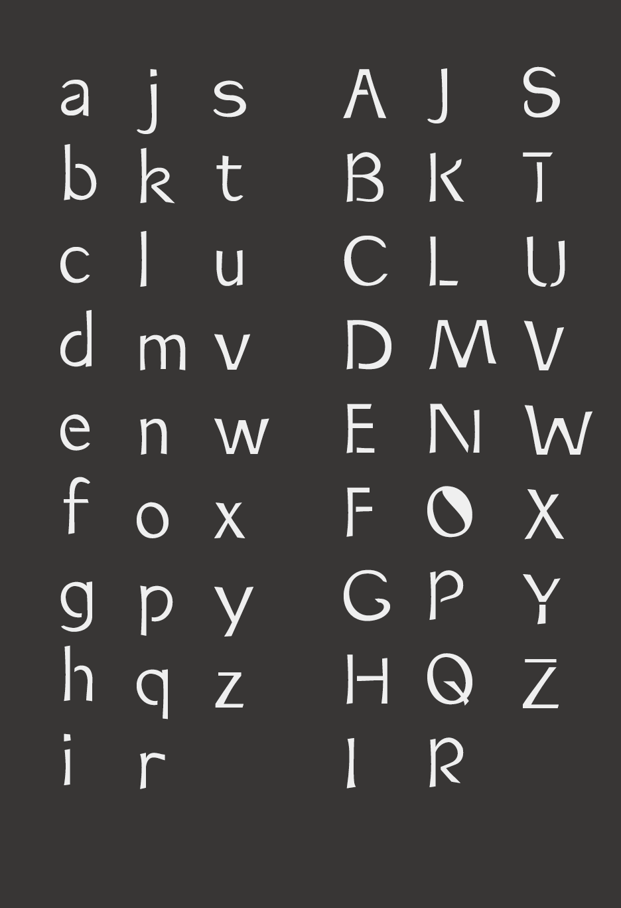
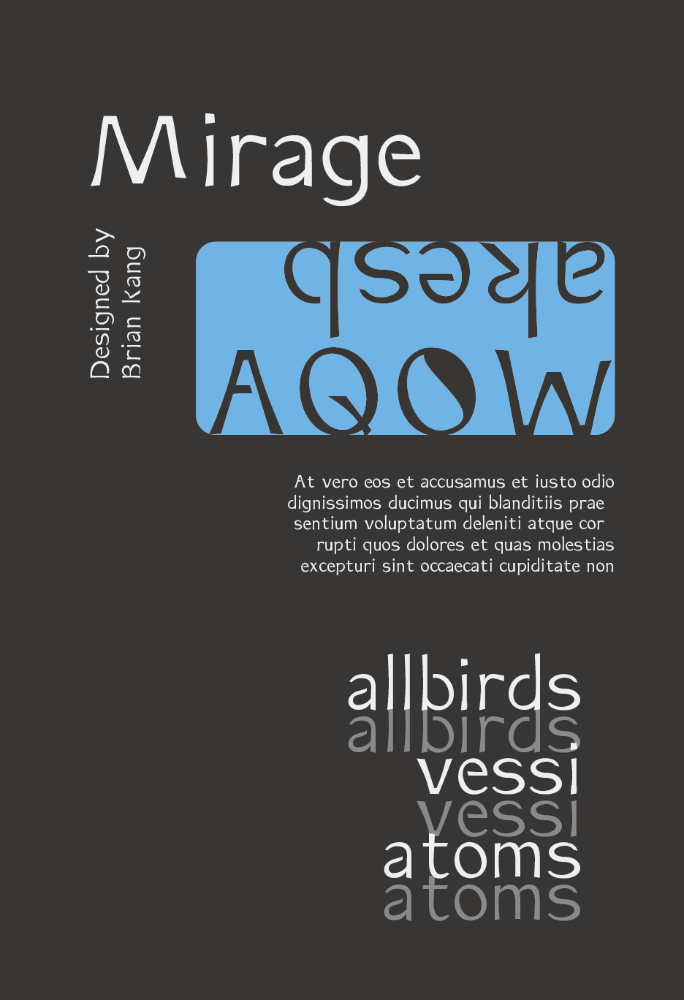

Typeface
As an assignment for a design class, I designed a typeface using a program called glyphs. Having already practiced various types of calligraphy myself for years, I wanted to create one that had the bouncyness and playfulness of natural handwritten strokes. I also tried to give the letterforms a feel of haziness like a mirage in the desert (hence the name). While the lines are untextured I wanted to give them a slight feeling of curviness, inspired by my desert theme (I imagined snakes and reeds in the desert for some of the forms).

All the glyphs I designed

A poster I designed in Illustrator to showcase the type at different font sizes as well as the negative spaces